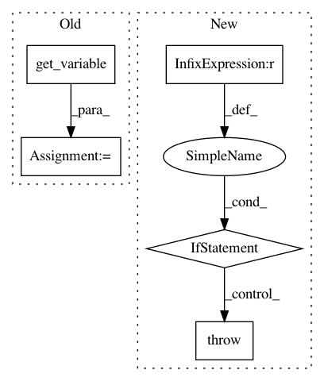

61063a28f6c389f1a92e4c64625dec930d83d1ed,kfac/python/ops/optimizer.py,KfacOptimizer,set_damping_adaptation_params,#KfacOptimizer#Any#Any#Any#Any#Any#Any#,176
Before Change
"rho", shape=(), dtype=tf.float32, trainable=False) // LM ratio.
self._prev_loss = tf.get_variable(
"prev_loss", shape=(), dtype=tf.float32, trainable=False)
self._q_model_change = tf.get_variable(
"q_model_change", shape=(), dtype=tf.float32, trainable=False)
self._damping = tf.get_variable(
"damping", initializer=self._damping_constant, trainable=False)
def get_cov_vars(self):
After Change
if self._adapt_damping:
raise ValueError("Damping adaptation parameters already set.")
if self._momentum_type == "adam":
// This doesn"t work due to the way previous updates are retrieved using
// the stored velocity. It"s pure and simple engineering to fix it.
raise ValueError(""adam" type momentum not currently supported with "
"adaptive damping.")
def get_cov_vars(self):
Returns all covaraiance varaiables.
return self._fisher_est.get_cov_vars()
In pattern: SUPERPATTERN
Frequency: 3
Non-data size: 5
Instances
Project Name: tensorflow/kfac
Commit Name: 61063a28f6c389f1a92e4c64625dec930d83d1ed
Time: 2019-02-01
Author: jamesmartens@google.com
File Name: kfac/python/ops/optimizer.py
Class Name: KfacOptimizer
Method Name: set_damping_adaptation_params
Project Name: Bihaqo/t3f
Commit Name: 4257bd12136ce3a135a4fab4ad0667dfccf8368d
Time: 2017-02-03
Author: novikov@bayesgroup.ru
File Name: variables.py
Class Name:
Method Name: get_tt_variable
Project Name: tensorlayer/tensorlayer
Commit Name: 2e0f0929df4b01b269962a6423d6cb78b6d3da17
Time: 2018-12-04
Author: dhsig552@163.com
File Name: tensorlayer/layers/inputs.py
Class Name: EmbeddingInput
Method Name: __init__